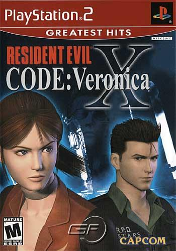

Tales of the AbyssFinal Fantasy XPokemon EmeraldPersona 4Final Fantasy Tactics AdvanceTLH: Trails in the SkyYu-Gi-Oh! The Duelists of the RosesFinal Fantasy VDivinity: Original Sin 2Digimon World Data SquadMegaman Battle Network 6Grandia IIDragon Ball Z: Budokai Tenkaichi 3Summon Night: Swordcraft StoryNaruto Shippūden: Ultimate Ninja 5Wild Arms XFLunar: Silver Star HarmonyHalo: ReachResident Evil: Code Veronica X